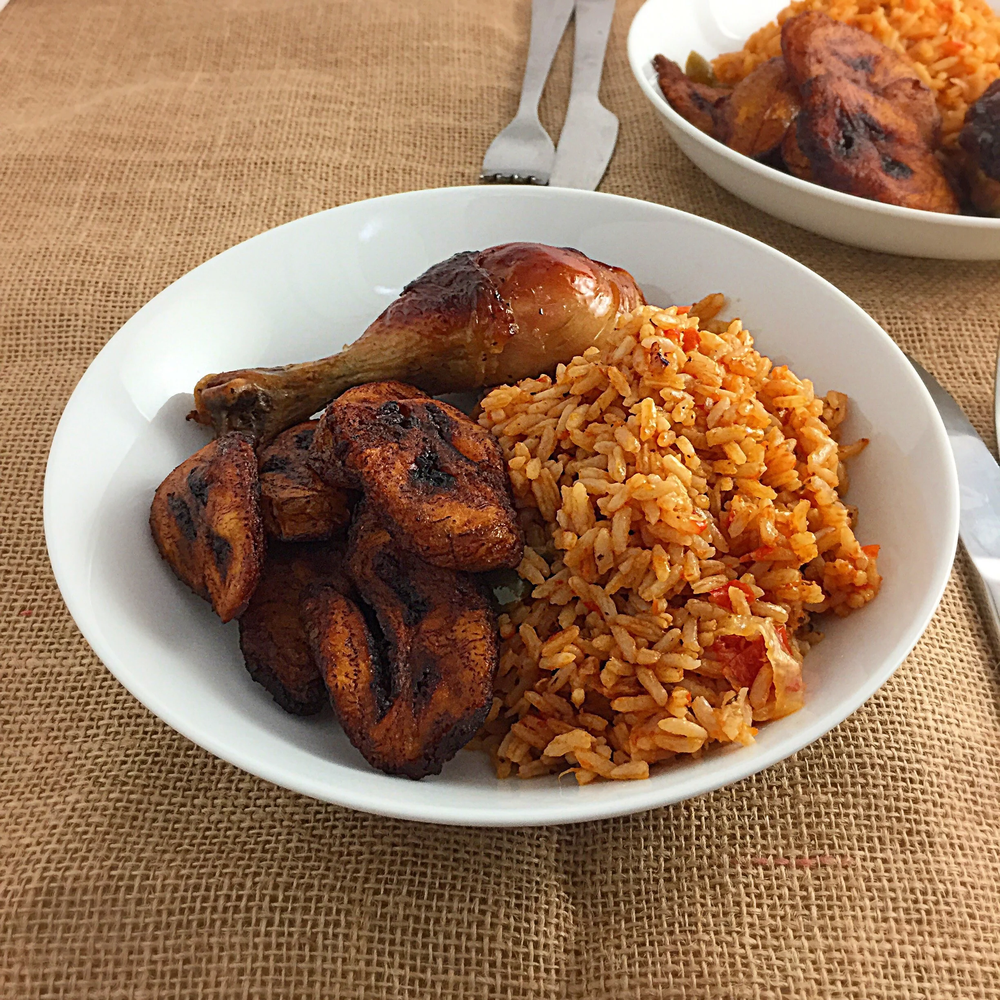

Jollof Rice

Jollof rice is a Nigerian delicacy which is a staple at
events, parties and other ceremonies. The origins of
this popular dish causes contention between several
West African countries which each claiming to be the
originator of this special dish
To make Jollof rice, you will need the following
ingredients:
- Half cup of rice
- Tomatoes
- 30 cl of vegetable oil
- Large onion
- Pepper
- Salt
- Chicken stock
Steps
- Blend the tomatoes and pepper in a food processor
or blender for about 45 seconds, make sure that
everything is blended well.
- Heat the oil in a medim sized pot and medium heat.
Once the oil is heated up a bit, add onions and fry
till the are golden. Then add the tomato and pepper
paste, and stir for 15 minutes in low heat.
- Add the chicken stock and seasoning
- Add the parboiled rice and cover in foil for 20
minutes
- Serve hot!